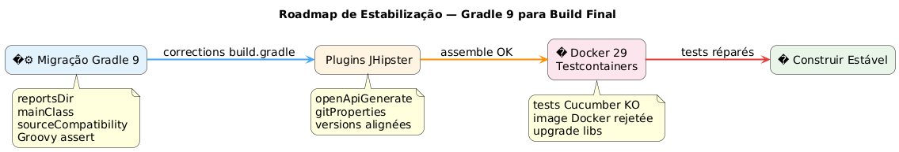

Quando o Gradle 9, o Docker 29 e o Testcontainers se colocam a ferver : depuração de um build JHipster
Publié le 25 April 2026
- A cena : un projet JHipster, un build qui ne charge plus
- Erro 1: a variável fantasma `reportsDir
- Erro 2 :
main = "…"não existe mais no Gradle 9 - Erro 3 :
sourceCompatibilitynão é mais uma propriedade de projeto - Erro 4 : a afirmação Groovy de três operandos
- Erro 5 : a dependência implícita
compileKotlin→ `openApiGenerate - Erro 6 :
generateGitPropertiesfalha em `FilterOutputStream.write() - Finalmente: Testcontainers entra em cena
- Fase 1 : a pista docker-java
- Phase 2: pesquisa web e trilha de navegação GitHub
- Fase 3 : a armadilha dos artefatos renomeados
- Fase 4 : forçar a resolução
- Resultado final
- Tabela resumida das correções
- Conclusão
Você já conheceu esse momento onde um simples`./gradlew build`que você lança cem vezes por dia começa repentinamente a travar em um erro nunca visto? Multiplique isso por onze erros sucessivos, adicione uma boa dose de incompatibilidade Docker Engine 29, polvilhe com Gradle 9 que faz desaparecer APIs que utilizávamos há dez anos. Aqui está o log completo.
Objetivo: mostrar a série de incompatibilidades.
Failed to generate image: PlantUML preprocessing failed: [From <input> (line 5) ] @startuml left to right direction title Migração Gradle 9 rectangle "1\nreportsDir" as A rectangle "2 ^^^^^ Syntax Error? (Assumed diagram type: component) @startuml left to right direction title Migração Gradle 9 rectangle "1\nreportsDir" as A rectangle "2 classePrincipal" as B rectangle "3 sourceCompatibility" as C rectangle "4 Groovy assert" as D A --> B B --> C C --> D @enduml
Objetivo: isolar os plugins quebrados.
Failed to generate image: PlantUML preprocessing failed: [From <input> (line 7) ] @startuml left to right direction title Plugins a corrigir skinparam shadowing false skinparam roundcorner 18 rectangle "1 ^^^^^ Syntax Error? (Assumed diagram type: class) @startuml left to right direction title Plugins a corrigir skinparam shadowing false skinparam roundcorner 18 rectangle "1 openApiGenerate" as A #FFF3E0 rectangle "2 gitProperties 2.5.7" as B #FFF3E0 rectangle "3 Versões" as C #E3F2FD rectangle "4 Montagem OK" as D #E8F5E9 A --> B B --> C C --> D @enduml
Objetivo : problema runtime
Failed to generate image: PlantUML preprocessing failed: [From <input> (line 9) ] @startuml left to right direction title Docker 29 + Testcontainers skinparam shadowing false skinparam roundcorner 18 skinparam defaultFontSize 14 rectangle "1 ^^^^^ Syntax Error? (Assumed diagram type: class) @startuml left to right direction title Docker 29 + Testcontainers skinparam shadowing false skinparam roundcorner 18 skinparam defaultFontSize 14 rectangle "1 Montado OK" as A #E8F5E9 rectangle "2 Testes Cucumber FALHA" as B #FFEBEE rectangle "3 Testcontainers 1.32 rejeitado" as C #FFF3E0 rectangle "4\nUpgrade\nversões" as D #E3F2FD rectangle "5 Compilação final OK" as E #E8F5E9 A --> B B --> C C --> D D --> E @enduml

A cena : un projet JHipster, un build qui ne charge plus
O projeto`edster`est uma aplicação JHipster gerada em 2024. O script de construção raiz`build.gradle`permaneceu estável por meses. Então decidimos atualizar a versão :
Componente |
Versão alvo |
Gradle |
9.4.1 |
Java |
21.0.11-tem (Eclipse Temurin) |
JHipster |
8.x (framework`tech.jhipster:jhipster-framework:8.11.0`) |
Spring Boot |
3.4.5 |
Kotlin |
2.3.0 |
Mecanismo Docker |
29.4.1 (API 1.54) |
A mudança de versão Java ocorre via SDKMAN :
sdk use java 21.0.11-temPrimeiro lançamento :
$ ./gradlew build --no-daemon
FAILURE: Build failed with an exception.
* Where:
Build file '/home/.../edster/build.gradle' line: 18
* What went wrong:
An exception occurred applying plugin request [id: 'jhipster.cucumber-conventions']
> Failed to apply plugin 'jhipster.cucumber-conventions'.
> Could not create task ':cucumberTest'.
> Could not create task ':consoleLauncherTest'.
> Could not set unknown property 'reportsDir' for task ':consoleLauncherTest'Nem mesmo conseguimos iniciar o carregamento do script de build. O problema está em`buildSrc/src/main/groovy/jhipster.cucumber-conventions.gradle`.
Erro 1: a variável fantasma `reportsDir
O script`jhipster.cucumber-conventions.gradle`contém :
tasks.register('consoleLauncherTest', JavaExec) {
dependsOn(testClasses)
String cucumberReportsDir = file("$buildDir/reports/tests")
outputs.dir(reportsDir) // <-- reportsDir n'existe PAS
classpath = sourceSets["test"].runtimeClasspath
main = "org.junit.platform.console.ConsoleLauncher"
// ...
}A variável definida é`cucumberReportsDir`. A usada é`reportsDir`-- que não está definida em nenhum lugar.
Correção</think> (Note: Since no French text was provided after the colon, there is nothing to translate. The output is therefore empty as per instructions.)outputs.dir(cucumberReportsDir)
Erro 2 : main = "…" não existe mais no Gradle 9
Reprise imediata:
Could not set unknown property 'main' for task ':consoleLauncherTest' of type org.gradle.api.tasks.JavaExec.Gradle 9 remove a propriedade`main`em proveito de`mainClass`nas tarefas`JavaExec`.
Correção:`mainClass = "org.junit.platform.console.ConsoleLauncher"`
Erro 3 : sourceCompatibility não é mais uma propriedade de projeto
Novo erro:
Could not set unknown property 'sourceCompatibility' for root project 'edster' of type org.gradle.api.Project.O script raiz tinha:
sourceCompatibility=17
targetCompatibility=17Gradle 9 remove essas propriedades no nível raiz. Eles devem viver dentro de um bloco`java`.
Correção(Empty output)
java {
sourceCompatibility = JavaVersion.VERSION_21
targetCompatibility = JavaVersion.VERSION_21
}Erro 4 : a afirmação Groovy de três operandos
O antigo script continha :
assert System.properties["java.specification.version"] == "17" || "21" || "24"Em Groovy,"21" et "24"`são strings truthy. A expressão resolve em(… == "17") || true || true`, que é sempre verdadeira — mas a sintaxe é inválida para a afirmação estrita desejada.
Correção:
assert System.properties["java.specification.version"] in ["17", "21", "23", "24"]Erro 5 : a dependência implícita compileKotlin → `openApiGenerate
O build está progredindo. Compilação Kotlin bem-sucedida. Então :
Task ':compileKotlin' uses this output of task ':openApiGenerate'
without declaring an explicit or implicit dependency.Gradle 9 recusa as dependências implícitas entre tarefas. Como`compileKotlin`python print(" lê as fontes geradas por")openApiGenerate, é necessário declarar o link.
Correçãoem`build.gradle`:
afterEvaluate {
tasks.named("compileKotlin").configure {
dependsOn(tasks.named("openApiGenerate"))
}
}Le `afterEvaluate`é necessário porque`openApiGenerate`é uma extensão (plugin OpenAPI Generator) e não uma tarefa diretamente acessível durante a fase de configuração.
Erro 6 : generateGitProperties falha em `FilterOutputStream.write()
A compilação Java passa. Os recursos são processados. Então :
> Task :generateGitProperties FAILED
No signature of method: java.io.FilterOutputStream.write() is applicable for argument types: (Integer) values: [103]O plugin`gradle-git-properties`version 2.5.0 é incompatível com Java 21 / Gradle 9. Um bug interno tenta chamar`write(int)` por Groovy em um fluxo que ele fechou
correçãoem`gradle.properties`:
gitPropertiesPluginVersion=2.5.7Finalmente: Testcontainers entra em cena
Até aqui, era depuração de script de build pura. Cada erro era uma incompatibilidade do Gradle 9 ou do Java 21 nos scripts de build. Após as seis correções acima, o`./gradlew assemble`passa com sucesso.
Mas`./gradlew build`executa também os testes, e os testes Cucumber usam o Testcontainers para iniciar um PostgreSQL efêmero.
Could not find a valid Docker environment.
EnvironmentAndSystemPropertyClientProviderStrategy: failed with exception BadRequestException
(Status 400: {"message":"client version 1.32 is too old. Minimum supported API version is 1.40"}
UnixSocketClientProviderStrategy: failed with exception BadRequestException
(Status 400: {"message":"client version 1.32 is too old. Minimum supported API version is 1.40"}Testcontainers é incapaz de comunicar com o Docker. Duas estratégias diferentes (variáveis de ambiente + soquete Unix) falham no mesmo erro.
Failed to generate image: PlantUML preprocessing failed: [From <input> (line 5) ] @startuml skinparam backgroundColor #FEFEFE skinparam handwritten false actor "Testcontainers ^^^^^ Syntax Error? (Assumed diagram type: sequence) @startuml skinparam backgroundColor #FEFEFE skinparam handwritten false actor "Testcontainers 1.20.6" as TC participant "docker-java 3.4.1" as DJ participant "Docker Engine 29.4.1" as DE TC -> DJ : new DockerClient() DJ -> DE : GET /_ping\nUser-Agent: docker-java/3.4.1\nAPI-Version: 1.32 DE --> DJ : HTTP 400 Bad Request\nclient version 1.32 is too old.\nMinimum supported API version is 1.40 DJ --> TC : BadRequestException TC --> TC : Could not find a valid\nDocker environment note right of DE Docker Engine 29.x impose API minimum = 1.40 (défaut ancien : 1.24) end note note left of DJ docker-java 3.4.1 envoie hardcoded API version 1.32 dans l'en-tête HTTP end note @enduml
Fase 1 : a pista docker-java
Primeiro reflexo: o cliente Docker Java usado pelo Testcontainers envia a versão da API`1.32`no handshake HTTP, mas o Docker Engine 29.4.1 exige um mínimo de`1.40`O problema está do lado do cliente, não do daemon.
Verificação da versão do docker-java resolvida pelo Testcontainers 1.20.6 :
$ ./gradlew dependencies --configuration testRuntimeClasspath | grep docker-java
+--- com.github.docker-java:docker-java-api:3.4.1
+--- com.github.docker-java:docker-java-transport:3.4.1docker-java 3.4.1, datando de Testcontainers 1.20.6. A última versão pública do docker-java é 3.5.1. Vamos tentar forçar a atualização da versão via`resolutionStrategy`no bloco`configurations` de build.gradle:
configurations {
all {
resolutionStrategy.eachDependency { details ->
if (details.requested.group == "com.github.docker-java"
&& details.requested.name.startsWith("docker-java")) {
details.useVersion("3.5.1")
}
}
}
}Reexecução do build. Mesmo erro:`client version 1.32 is too old`.
Verificação do cache Gradle: os JARs foram baixados novamente, mas o erro persiste. docker-java 3.5.1 ainda envia`1.32`. Esta versão, portanto, não é suficiente para Docker Engine 29.4.1.
Ação de purificação: limpar completamente o cache do Gradle, só para ter certeza :
rm -rf ~/.gradle/caches
rm -rf /path/to/project/.gradleRecarga completa após limpeza. Mesmo erro.
Phase 2: pesquisa web e trilha de navegação GitHub
docker-java 3.5.1 é insuficiente. Só resta procurar se alguém já encontrou este problema exato.
Pesquisa direcionada nos issues testcontainers-java e docker-java :
site:github.com/testcontainers "client version 1.32 is too old"
site:github.com/docker-java "client version 1.32" Docker Engine 29Primeiros resultados imediatos :
-
testcontainers-java#11210—
[Bug]: client version 1.32 is too old. Minimum supported API version is 1.44 -
testcontainers-java#11212—
[Bug]: Docker 29.0.0 could not find a valid Docker environment -
testcontainers-java#11491—
[Bug]: Incompatibility in Ubuntu Github runners with Docker Engine 29.1.*
O caminho de navegação está claro: o Docker Engine 29.x elevou sua versão mínima da API para`1.24`(defeito antigo) à`1.40`. Testcontainers 1.20.x utiliza o docker-java 3.4.x que negocia a versão da API enviando`1.32`. O daemon recusa educadamente mas firmemente.
No problema #11491, um mantenedor responde :
Esta resposta contémduas informações críticas:
-
Testcontainers 2.0.3+ resolve o problema
-
Os módulos foramrenomeados com o prefixo `testcontainers-
Fase 3 : a armadilha dos artefatos renomeados
A renomeação é bruta. No Testcontainers 2.x, nenhum dos nomes antigos funciona mais sob esse nome:
Nome antigo (1.x) |
Novo nome (2.x) |
|
|
|
|
|
|
|
inalterado |
Primeira tentativa: aplicar a BOM Testcontainers 2.0.5 e os novos nomes de artefatos em`build.gradle`.
dependencies {
testImplementation platform("org.testcontainers:testcontainers-bom:2.0.5")
testImplementation "org.testcontainers:testcontainers-postgresql"
testImplementation "org.testcontainers:testcontainers-jdbc"
testImplementation "org.testcontainers:testcontainers-junit-jupiter"
testImplementation "org.testcontainers:testcontainers"
}./gradlew build
FAILURE: Could not find org.testcontainers:jdbc:2.0.5.
Could not find org.testcontainers:junit-jupiter:2.0.5.O BOM de testcontainers-bom não basta.Por quê? Porque o Spring Boot 3.4.5 expõe seu próprio BOM de gerenciamento de dependências.spring-boot-dependencies) queganhano BOM do Testcontainers na resolução transitiva. Spring Boot corrige`testcontainers` à 1.20.6, e portanto todos os artefatos que não estão explicitamente no BOM do Spring Boot (como os novos`testcontainers-*) resolvem para os antigos nomes`1.20.6-- que já não existem nesta versão.
Ao inspecionar o`dependencies --configuration testRuntimeClasspath`, encontra-se :
+--- org.testcontainers:testcontainers -> 1.20.6 (*)
| \--- org.testcontainers:testcontainers:2.0.5 -> 1.20.6Le →`indica a substituição : Testcontainers 2.0.5 é requerido, mas Spring Boot força`1.20.6.
Failed to generate image: PlantUML preprocessing failed: [From <input> (line 8) ]
@startuml
skinparam backgroundColor #FEFEFE
skinparam handwritten false
skinparam componentStyle rectangle
left to right direction
component "build.gradle
^^^^^
Syntax Error? (Assumed diagram type: class)
@startuml
skinparam backgroundColor #FEFEFE
skinparam handwritten false
skinparam componentStyle rectangle
left to right direction
component "build.gradle
(consumidor)" as BG #E3F2FD {
rectangle "pedido\n`testcontainers-bom:2.0.5" as REQ
rectangle "pedido
`testcontainers-postgresql" as REQ2
}
component "Maven Central" as MC #FFF3E0
component "Declarações" as DEC #E8F5E9 {
rectangle "testcontainers-bom:2.0.5`
corrige 2.0.5" as BOM2
rectangle "spring-boot-dependencies:3.4.5`\nfixa 1.20.6" as BOM1
}
component "Resolução Gradle" as RES #FFEBEE {
rectangle "Versão vencedora\n`testcontainers:1.20.6" as WIN #EF9A9A
}
BG --> DEC : "analisa as BOMs"
BOM2 --> RES : "propõe 2.0.5"
BOM1 --> RES : "propõe 1.20.6"
WIN -> MC : "baixe\ntestcontainers:1.20.6"
note bottom of WIN
Spring Boot BOM prime car
le plugin spring-boot applique
ses dépendances de gestion
après la résolution du consommateur
end note
@enduml
Fase 4 : forçar a resolução
A estratégia se torna dupla:
-
Forçar o docker-java para sua versão 3.7.1 (testada como compatível com Docker Engine 29)
-
Force o Testcontainers core para 2.0.5 contornando o BOM do Spring Boot
Failed to generate image: PlantUML preprocessing failed: [From <input> (line 9) ]
@startuml
skinparam backgroundColor #FEFEFE
skinparam handwritten false
skinparam componentStyle rectangle
left to right direction
component "build.gradle\n(com resolutionStrategy)" as BG #E8F5E9 {
rectangle "BOM Testcontainers
^^^^^
Syntax Error? (Assumed diagram type: class)
@startuml
skinparam backgroundColor #FEFEFE
skinparam handwritten false
skinparam componentStyle rectangle
left to right direction
component "build.gradle\n(com resolutionStrategy)" as BG #E8F5E9 {
rectangle "BOM Testcontainers
`2.0.5" as BOM2
rectangle "resolutionStrategy\n.eachDependency" as RS #66BB6A
}
component "Conflito resolvido" as RESOLVED #E3F2FD {
rectangle "docker-java\n`3.7.1` (forçado)" as DJ
rectangle "testcontainers
`2.0.5` (forçado)" as TC #81C784
rectangle "testcontainers-postgresql
`2.0.5" as TPG
rectangle "testcontainers-jdbc
`2.0.5" as TJ
rectangle "testcontainers-junit-jupiter
`2.0.5" as TJJ
}
component "BOM Spring Boot\n(implícito, sobrescrito)" as BOM1 #FFEBEE
component "Maven Central" as MC #FFF3E0
BG --> RESOLVED : "BOM Testcontainers 2.0.5\npassa diretamente"
RS -> DJ : "força 3.7.1"
RS -> TC : "força 2.0.5"
RESOLVED --> MC : "Baixe os JARs\ncompatíveis com Docker 29"
BOM1 -[#gray,dashed]-> RESOLVED : "ignorado no testcontainers\net docker-java"
note bottom of RS
Le `eachDependency` intercepte
la résolution Gradle AVANT
que le BOM Spring Boot ne gagne.
C'est une intervention chirurgicale.
end note
@enduml
Correção finalem`build.gradle`:
configurations {
all {
resolutionStrategy.eachDependency { details ->
if (details.requested.group == "com.github.docker-java"
&& details.requested.name.startsWith("docker-java")) {
details.useVersion("3.7.1")
}
if (details.requested.group == "org.testcontainers"
&& details.requested.name == "testcontainers") {
details.useVersion("2.0.5")
}
}
}
}
dependencies {
testImplementation platform("org.testcontainers:testcontainers-bom:2.0.5")
testImplementation "org.testcontainers:testcontainers-jdbc"
testImplementation "org.testcontainers:testcontainers-junit-jupiter"
testImplementation "org.testcontainers:testcontainers-postgresql"
testImplementation "org.testcontainers:testcontainers"
// ... autres dépendances Spring Boot
}Le `resolutionStrategy.eachDependency`é a única maneira de contornar o BOM`spring-boot-dependencies`gerenciado pelo plugin Spring Boot. O teste de igualdade sobre`details.requested.name == "testcontainers"`é voluntariamente restritivo: forçamos apenas o módulo core. Os módulos`testcontainers-*`Seguem o BOM do Testcontainers 2.0.5 que declaramos explicitamente
Resultado final
$ ./gradlew build --no-daemon
> Task :consoleLauncherTest
[2 containers found]
[2 containers started]
[2 containers successful]
BUILD SUCCESSFUL in 1m 16sTestcontainers 2.0.5 + docker-java 3.7.1 finalmente conseguem criar seus containers PostgreSQL via Docker Engine 29.4.1. O erro de negócio final (HTTP 500 no teste Cucumber) é um problema de aplicação totalmente independente do script de build.
Tabela resumida das correções
| # | Arquivo | Problema | correção |
|---|---|---|---|
1 |
|
Variável`reportsDir`inexistente |
|
2 |
|
`main`obsoleto Gradle 9 |
|
3 |
|
`sourceCompatibility`top-level proibido Gradle 9 |
Bloco`java { sourceCompatibility = JavaVersion.VERSION_21 }` |
4 |
|
Asserção Groovy sintaticamente inválida |
|
5 |
|
Dependência implícita`compileKotlin`→ |
|
6 |
|
`gitPropertiesPluginVersion`incompatível Java 21 |
|
7 |
Cache Gradle |
docker-java 3.5.1 testado, resolvido mas insuficiente |
Limpeza + passagem docker-java 3.7.1 |
8 |
|
Testcontainers 1.20.6 incompatível com Docker Engine 29 |
Forçamento Testcontainers 2.0.5 + prefix`testcontainers-*`+ resolutionStrategy vs Spring Boot BOM |
Conclusão
Se o seu build JHipster/Gradle falhar após uma atualização de versão para Gradle 9 + Docker Engine 29, os erros se dividem em duas categorias :
Erros de script de build(as 6 primeiras) : O Gradle 9 remove propriedades e sintaxes que vinham funcionando há anos (sourceCompatibility=, main =, reportsDir). São migrações mecânicas quando se conhece a nova API.
Erros de tempo de execução Docker(as 2 últimas): Docker Engine 29.4.1 exclui clientes API < 1.40. Testcontainers 1.20.6 (imposto pelo Spring Boot 3.4.5) usa docker-java 3.4.1 que envia 1.32. Somente Testcontainers 2.0.5 + docker-java 3.7.1 resolve o problema, com a renomeação dos artefatos e a imposição de versão via`resolutionStrategy.eachDependency`como único meio de contornar o BOM implícito do Spring Boot.
O script de build Gradle na raiz do projeto está agora limpo.`./gradlew build`passa para o Java 21, Gradle 9.4.1, Spring Boot 3.4.5 e Docker Engine 29.4.1.